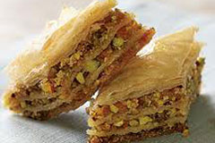

|

Baklava is a heavy dessert mainly served in winter. Average Macedonian family makes it 2-3 times a year, but in the pastery all over Macedonia it is served during the whole year. Nowadays filling differs much. For 32 servings.
Filling 1
Filling 2
Sherbet : 4 cups sugar, 5 cups water.
Combine all filling's ingredients together. Heat oven to 200 degrees. Grease a 12 x 12 x 1-inch pan. Count crusts. Cover bottom of pan with half of crusts greasing every second layer. Spread filling. Top with remaining crusts greasing every second layer. With sharp kniwe make 3 x 3 inch squares. Gently diagonaly cut squares. Bake 50 to 60 minutes until light brown. Cool thoroughly. Cook sherbet until bubbly and continue cooking for 5 more minutes.Hot sherbet pour into cold Baklava. Cool and serve. |